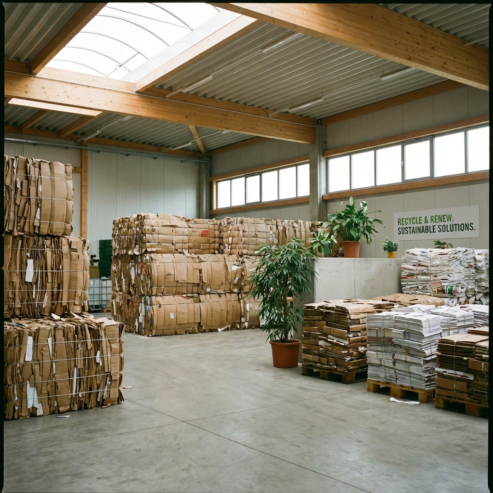
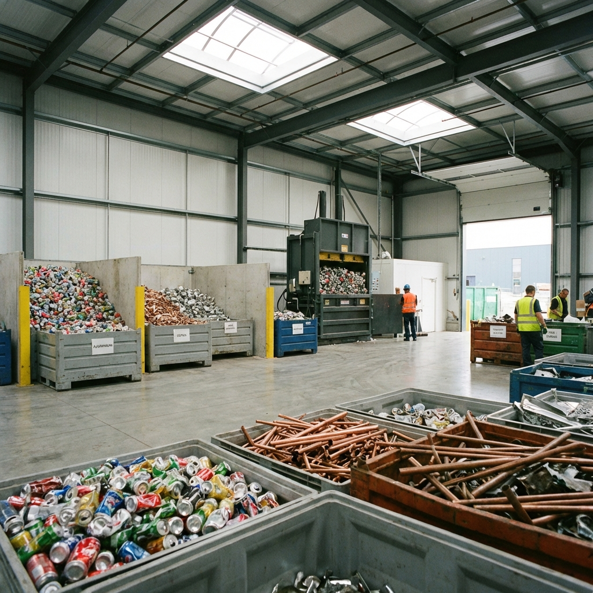
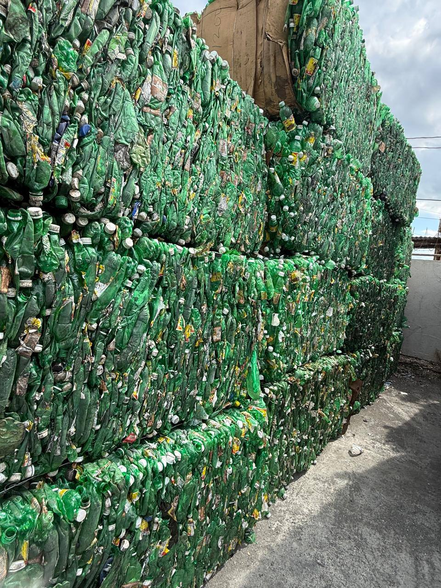

MRA International Limited
Advancing Recycling. Preserving Tomorrow.
Advancing Recycling. Preserving Tomorrow.
MRA International Limited is one of Jamaica's trusted recycling and export companies, specializing in the collection, processing, and global export of paper, metal, and plastic recyclables. We are committed to promoting environmental sustainability while providing reliable, high-quality materials to our international partners.
To recover, process and deliver high-quality recyclable materials to global markets, while driving a circular, resource-efficient future for Jamaica.
MRA International Limited transforms paper, metal and plastic waste into high-value, export-ready resources. We operate to international standards, maximize material efficiency, reduce waste, and create sustainable economic opportunities through innovation, rigorous quality control and responsible sourcing.
To be the Caribbean’s trusted circular-economy partner — turning waste into industry-ready resources that power sustainable growth.
MRA International Limited will grow into a fully integrated alternative-materials producer, building backward and forward industrial linkages and measurable sustainability impact across the value chain. We aim to lead by example — raising standards for quality, transparency and resource stewardship while strengthening communities and markets we serve.

We collect and process a wide range of paper grades, ensuring they meet export-quality standards.

MRA International handles both ferrous and non-ferrous metals for recycling and export.

We process various grades of plastics for reuse and export, supporting a cleaner Jamaica.
At MRA International Limited, we believe that recycling is more than just a business—it's a responsibility. By partnering with communities, businesses, and global buyers, we help reduce waste, preserve natural resources, and contribute to a cleaner, greener future for Jamaica and the world.

Mukesh Singh, founder and Chief Executive Officer of MRA International Limited, has dedicated his career to environmental conservation. With over 15 years of experience, Mukesh leads the company with passion, vision, and a commitment to sustainable change worldwide.
Email: docs@mraintltd.com
Phone: +1 (876) 391-6676; +1 (876) 648-6291
Address: 3A Haughton Avenue, Kingston, Jamaica, W.I